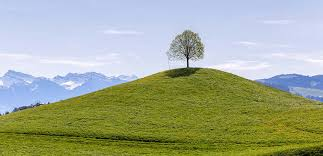
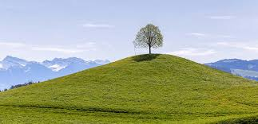

What is Soil Erosion?
Soil erosion is the process by which soil is removed or displaced by natural forces, such as wind and water, or by human activities, such as agriculture and construction.
Types of Soil Erosion
There are several types of soil erosion, including:
- Sheet erosion
- Rill erosion
- Gully erosion
- Wind erosion
- Water erosion
Causes of Soil Erosion
The main causes of soil erosion include:
- Poor land management practices
- Deforestation
- Overgrazing
- Construction and development
- Climate change
Effects of Soil Erosion
Soil erosion can have several negative effects, such as:
- Reduced soil fertility
- Loss of topsoil
- Decreased crop yields
- Increase in sedimentation in waterways
- Damage to infrastructure
Losses Of Topsoil
Topsoil is the richest earth’s layer with organic matter and nutrients, so its removal by water or wind essentially worsens field fertility, which is a critical effect of soil erosion on agricultural land. Besides, rills or gullies significantly complicate the cultivation of eroded lands.
Soil Acidification
A lack of organic matter may increase field acidity, which slows down crop development and exposes farmlands to water and wind.
Solutions To Soil Erosion
Decision-making in soil erosion control depends on factors like the soil type, topography, or climate specifics, and applied agricultural practices like tillage system or crop rotation. It is important to analyze the effectiveness of undertaken methods and adjust them for individual fields.
Success starts with early problem detection and the choice of suitable methods depending on its severity. For example, replanting, cover crops, or mulching can be good ways to reduce soil erosion in the initial stages because vegetation protects fields from destruction by water run-offs, raindrops, and wind. In severe cases, the impact can be mitigated with terrace farming or check dams.
Other soil erosion control measures include contour cropping and planting perennials with strong root systems to fix the ground and slow down water streams.

 

How To Prevent Soil Erosion
It’s not that easy to reduce erosive processes and even more difficult to stop them, this is why prevention is by far the best method of control.
Produce Crops On Suitable Lands
Some terrains are extremely prone to erosive processes, so they can’t be used for farming without certain preventive measures to mitigate the risks. Besides, each field type requires specific management to protect soil from erosion.
Practice Terracing And Contour Farming
Because erosion develops fast due to quick run-offs, terrace farming is the only way to grow crops on steep hills. Contour farming decreases soil erosion because plants absorb water and ridges stop it from flowing, which mitigates the destruction risks. Plants with strong roots also fix the land and prevent it from sliding down the slope.
Don’t Leave The Soil Bare
Field cover helps not only reduce but prevent field destruction. Over 30% ground cover for erosion control helps essentially mitigate the risks. Complete cover can be practiced in most grazing and crop production systems.
Plant Vegetation
Planting crops help prevent soil erosion by ensuring continuous ground cover, while leaving the field bare promotes erosive processes. Provide soil cover in between the growing season with crop rotation and cover crop practices. Besides, crop rotation reduces soil erosion by fixing the land with alternatively planted deep-rooted crops. Additionally, sequences of high vegetation protect fields from the wind.
Use Rotational Grazing
When livestock grazes in the same place for a long time, it eats up nearly all vegetation. In turn, ground cover loss often provokes erosion. This is why it is important to let the grazed areas regenerate by moving the cattle to other pastures.